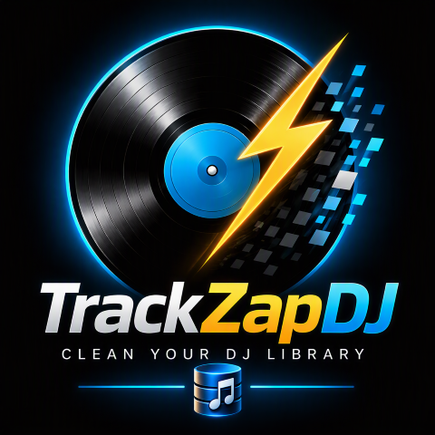

Votre bibliothèque DJ, propre en un éclair.
Des années d'imports, des centaines de doublons, et ce morceau introuvable au moment de le jouer. TrackZapDJ repère les doublons, garde la meilleure version et nettoie le reste, sans jamais toucher à vos playlists ni à vos cues.
CLEAN YOUR DJ LIBRARY
Une bibliothèque qui grossit… et qui vous ralentit
Chaque nouvel import, chaque disque dur fusionné, chaque morceau retéléchargé ajoute sa copie. Résultat : une collection qui vous fait perdre du temps en préparation comme en live.
Le même titre, trois fois
Laquelle a vos cues ? Laquelle est dans la bonne playlist ? Laquelle est en meilleure qualité ? Impossible de savoir d'un coup d'œil.
De l'espace disque gaspillé
Des gigaoctets de fichiers en double sur votre ordinateur et vos clés USB, que vous n'osez pas supprimer.
La peur de tout casser
Faire le ménage à la main, c'est risquer de perdre des playlists, des cues ou des heures de préparation.
TrackZapDJ s'occupe du tri. Vous gardez le contrôle.
Fini les doublons qui encombrent vos sets
TrackZapDJ analyse votre collection, vous présente clairement les doublons trouvés et vous laisse décider.
Détection intelligente
Regroupe les morceaux de même artiste et de même titre, avec un niveau de confiance pour chaque groupe.
Analyse musicale
Retrouve aussi les doublons cachés derrière des noms différents grâce à la tonalité, au BPM et à la durée.
Vérification au bit près
Compare le contenu réel des fichiers pour confirmer qu'ils sont strictement identiques.
Meilleure version suggérée
Propose automatiquement le morceau à conserver selon vos cues, vos playlists et la qualité. Vous gardez le dernier mot.
Playlists et cues préservés
Vos playlists pointent vers le morceau conservé, et vos hot cues / memory cues sont récupérés quand c'est possible.
Rapport détaillé
Exportez la liste des doublons et gardez une trace complète de chaque opération réalisée.
Un nettoyage sécurisé, à chaque étape
Votre bibliothèque est le fruit d'années de travail. TrackZapDJ multiplie les garde-fous avant, pendant et après le nettoyage.
Sauvegarde automatique
Avant toute modification, votre base est copiée dans une sauvegarde horodatée.
Mode simulation
Visualisez exactement ce qui serait fait, sans modifier la moindre donnée.
Corbeille, pas de suppression définitive
Les fichiers audio partent dans la corbeille de votre système : vous pouvez toujours les restaurer.
Validation manuelle
Rien n'est supprimé sans votre accord explicite, groupe par groupe.
Contrôles de sécurité
Le nettoyage est bloqué si votre logiciel DJ est ouvert, et un fichier encore utilisé n'est jamais supprimé.
100 % local
Tout est traité sur votre ordinateur. Votre bibliothèque n'est envoyée nulle part.
Quatre étapes, et c'est propre
Ouvrez votre bibliothèque
TrackZapDJ charge votre collection en un clic.
Lancez l'analyse
Suivez la progression en direct ; vous pouvez l'annuler à tout moment.
Validez les groupes
Contrôlez chaque groupe, choisissez le morceau à garder, écartez ce que vous voulez.
Simulez, puis nettoyez
Vérifiez l'aperçu, confirmez : la sauvegarde est faite, le ménage aussi.
Pensé pour les logiciels DJ que vous utilisez
TrackZapDJ démarre avec Rekordbox. D'autres logiciels sont prévus ensuite.
Vous vous demandez…
Quand TrackZapDJ sera-t-il disponible ?
L'application est en cours de finalisation. Laissez-nous votre adresse : vous serez parmi les premiers prévenus du lancement.
Est-ce que TrackZapDJ sera payant ?
Oui, TrackZapDJ sera une application payante. Les tarifs seront annoncés au lancement.
Est-ce que je risque de perdre mes playlists ou mes cues ?
TrackZapDJ est conçu précisément pour l'éviter : sauvegarde automatique, mode simulation, validation manuelle et fichiers envoyés à la corbeille plutôt que supprimés.
Ma bibliothèque est-elle envoyée sur Internet ?
Non. Toute l'analyse se fait sur votre ordinateur. Vos morceaux et votre base restent chez vous.
Prêt à zapper vos doublons ?
Soyez parmi les premiers informés de la sortie de TrackZapDJ. Un simple e-mail suffit, aucun engagement.
⚡ Me prévenir du lancement Votre adresse ne servira qu'à vous informer du lancement de TrackZapDJ.